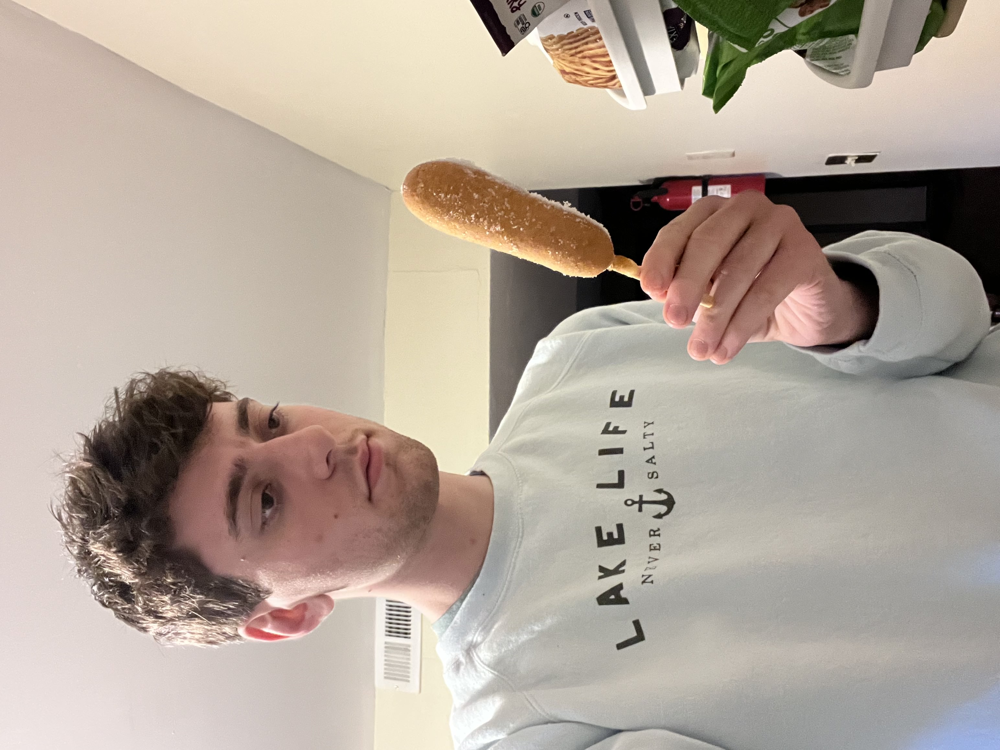

Skip to main contentFirst I arrive at my home after a long day of work and or play. Either way, I am tuckered out and in need of something to raise my spirits. In my search for a moral-boosting treat, I head to my fridge to see what I have available. My first instinct is to look through the freezer for some of my frozen snacks.
There are so many choices laid out in front of me so I take a moment to ponder as the cold air rushes out of the freezer slowly raising my electric bill. This moment of seemingly deep thought is but a facade as I know what I desire.

Then my eyes meet with my heart's desire, a classic corn dog. She is my old reliable friend who has never done me wrong. My day has just improved drastically. Her only flaw is that she can be a bit icy and cold at times so I pop her in the air fryer on a boat of tinfoil to warm her up. I set the time to eight minutes and prepare the table for my snack.Perfection takes time so I wait the entire eight minutes while the sweet aroma of the bread surrounding the delicate hot dog emanates throughout the room. This is a moment of practiced patience and good things come to those who wait. She’s ready and so am I so I place the corn dog on a plate and grab some utensils because I am not a savage. I then run into another predicament, she’s in the buff and needs to be dressed before we have our moment. I drizzle the mustard across the corn dog in a zigzag pattern and immediately take a bite before the phone has a chance to capture the entire beauty of this fine cuisine. At this point, dopamine has rushed to my brain informing me that I have made a wise decision and the cycle will continue tomorrow when I prepare my next corn dog.